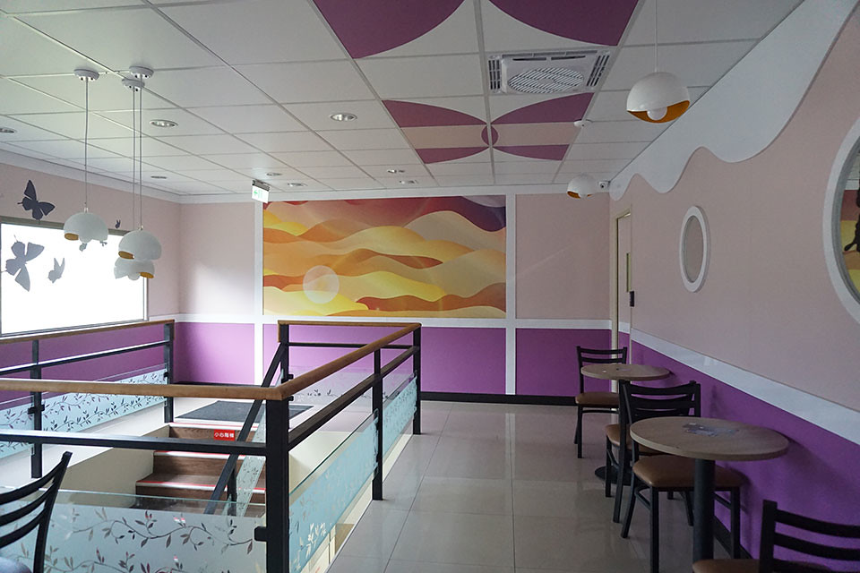

梨山環山部落| 獨特景緻紫藤山城
梨山環山部落

梨山環山部落 | 獨特景緻紫藤山城
環山部落是泰雅族部落之一，因為部落四面都被眾山圍繞，故以「環山」稱之。相傳其祖先居住於Pinsbkan(今南投縣仁愛鄉發祥村)。在日治時期，日本人稱這裡為「Sqoayaw」，意指「歡樂小街」，由此可見居住在環山部落的居民擁有自在及豁達的個性。環山部落更是中橫宜蘭支線最大的部落。
正如其名 群山環繞之小山城
部落入口處 串串紫藤掛牆上 每一串代表一個家族
聚落四周的特有景緻..就是充滿各式各樣的果樹…
後山有座生態豐富護魚步道
座落於大甲溪與司界蘭溪交界處附近

二樓的咖啡廳…白色雲朶配上夢幻般的紫…美呆了…大片落地窗可遠眺群山…
往雪山登山入口之吊橋
test